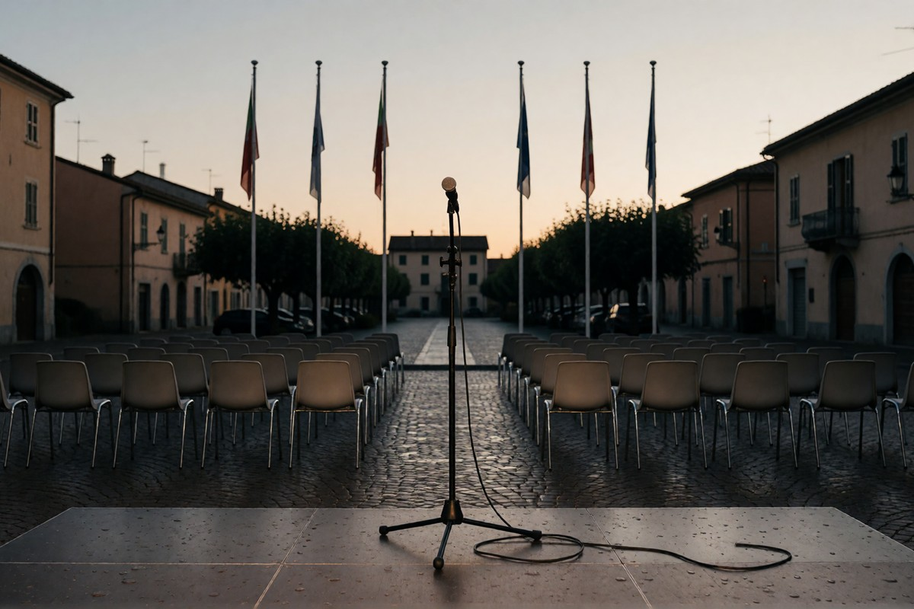

Politica italiana · 24 novembre 2026
Grillo, Di Battista e il campo largo. L'editoriale del Riformista
Sul Riformista Pasquale Ferraro sostiene che l'apertura di Beppe Grillo a Alessandro Di Battista può far saltare il campo largo. L'editoriale per gli abbonati, con il commento dell'autore e due cautele.
di Franco Zanghì
Può un uomo che ha fondato un partito diventarne il nemico più pericoloso? È la domanda che resta dopo l'intervista di Beppe Grillo a «Che tempo che fa», sul Nove, domenica 22 novembre 2026, la sua prima apparizione in televisione dopo circa tre anni. E secondo il Riformista a pagare il conto non sarà soltanto Giuseppe Conte.
A sostenerlo è Pasquale Ferraro, in un articolo di martedì 24 novembre: «Grillo pronto all'asse con Di Battista: il ritorno al Movimento delle origini può far saltare in aria il campo largo».
Che cosa ha detto Grillo
Sul simbolo: «A gennaio ci sarà forse un giudice che dirà che questo simbolo è mio», e in quel caso «me lo prendo e magari lo darò in uso ai minori di 25 anni». Su chi guida oggi il Movimento non ha fatto nomi, ma ha usato un epiteto: «Bei tempi prima del reverendo Jones». E su Alessandro Di Battista, ex deputato dei Cinque stelle e volto delle origini: «Gli darei una mano domani mattina. È il mio fratello minore».

La tesi di Ferraro
Ferraro descrive Grillo «in modalità kamikaze politico contro la sua ex creatura». La sinistra, è il suo ragionamento, aveva puntato tutto sulle divisioni del centrodestra, che però sono state assorbite, mentre il Partito democratico si spostava a sinistra. E adesso, proprio da sinistra, arriva un attacco che nessuno aveva messo in conto: Di Battista, uomo di piazza, toglierebbe voti al Movimento e al Partito democratico. «È questo l'incubo peggiore per la sinistra», scrive.
Come la vedo io
Sulla diagnosi Ferraro ha ragione: una coalizione che va dai centristi alla sinistra radicale, e che ha bisogno dei voti dei Cinque stelle, è fragile per natura. Basta un fondatore arrabbiato davanti a una telecamera.
Ma c'è una cosa che il pezzo non dice. Grillo non attacca Conte da avversario: lo attacca da padre. Il Movimento è nato gridando contro i partiti e contro i giornali, poi è andato al governo con tutti. Conte lo ha trasformato in un partito come gli altri, e oggi il fondatore gli rinfaccia esattamente questo. Non è una lite fra due uomini: è un movimento che non ha mai deciso che cosa voleva diventare.
Due cautele. I voti di Grillo non sono più quelli del 2013, e una candidatura di Di Battista resta un'ipotesi: «gli darei una mano» non è un annuncio. E chi governa non stappi lo spumante: la protesta che Di Battista potrebbe raccogliere nasce da problemi veri, salari, bollette, periferie.
E allora la domanda è una: il campo largo nasce per governare l'Italia, o per tenere insieme chi non si sopporta?
Fonti
- Il Riformista, Pasquale Ferraro, «Grillo pronto all'asse con Di Battista: il ritorno al Movimento delle origini può far saltare in aria il campo largo», 24 novembre 2026
- ANSA, «Grillo show e avvisa: se il giudice dice che il Movimento è mio me lo riprendo», 22 novembre 2026
- Il Fatto Quotidiano, «Grillo, simbolo M5s agli under 25 e Di Battista», 22 novembre 2026
- LaPresse, «M5s, Conte: Di Battista candidato, ipotesi non contemplata», 20 novembre 2026
- Il Foglio, Ruggiero Montenegro, «Le barricate di Conte, attaccato da destra e dai vecchi amici Grillo e Dibba», 24 novembre 2026
Le espressioni «kamikaze politico» e «incubo peggiore per la sinistra» sono di Pasquale Ferraro, non di Beppe Grillo. Grillo non ha nominato Giuseppe Conte e ha usato soltanto l'epiteto «reverendo Jones», già impiegato in un podcast nel settembre 2026: il riferimento al predicatore americano e alla strage del 1978 è contesto aggiunto dai giornali. Grillo non ha annunciato un sostegno a Di Battista: ha detto «gli darei una mano domani mattina», in forma condizionale. Il Riformista scrive che Grillo «ha confermato l'intenzione di sostenere» Di Battista: è un'interpretazione, non una citazione. Le citazioni dell'intervista variano fra le testate e qui sono riportate nella forma dell'ANSA e del Fatto Quotidiano. Non risultano, alla data di pubblicazione, replica di Conte o del Movimento, dichiarazioni di Di Battista o reazioni del Partito democratico. La frase di Conte «ipotesi non contemplata» è del 20 novembre e precede l'intervista.